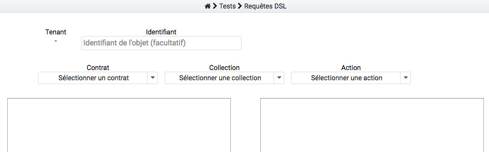
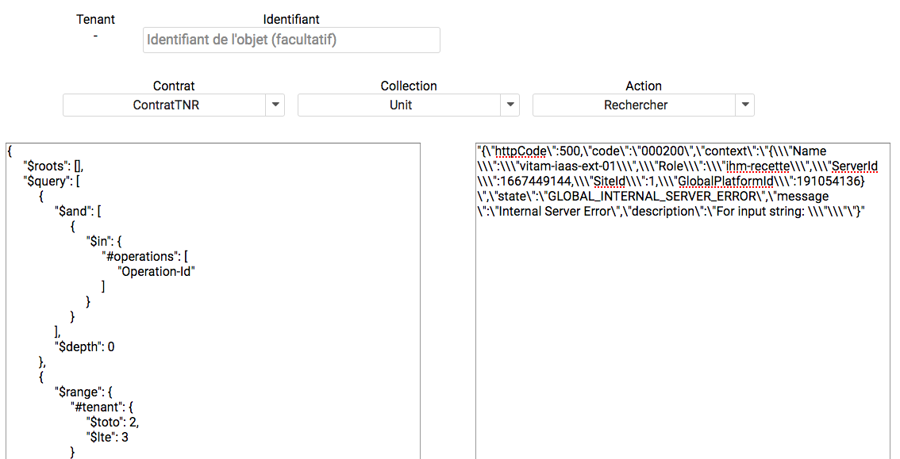

Tests Manuels¶
- Les tests manuels peuvent être effectués :
- A l’aide du cahier de tests manuels.
- Via l’IHM recette, au travers de requêtes DSL
Cahier de tests manuels¶
Le cahier de test manuel se présente sous forme de tableur. Il répertorie tous les cas de test possibles, regroupés par onglets par grand domaine fonctionnel.
Ce document est disponible dans la documentation de la solution logicielle Vitam. Pour les partenaires du programme Vitam, une copie se trouve également dans l’outil Jalios, dans l’espace livraison.
Le tableau contient :
- Le titre explicite du cas de test
- L’itération à laquelle le test se raccroche
- La liste des User Stories qui traitent ce cas de test
- Le nom de l’activité, nom associé au code Story Map
- Le Code Story Map, c’est-à-dire le code attribué à ce sujet (entrée, accès, stockage, etc.)
- Le Use Case ou déroulement du test étape par étape
- IHM / API, spécifie à quelle interface le test est dédié
- Le ou les jeux de tests associés
Requêtes DSL¶
Il est possible de lancer des requêtes DSL via l’IHM de recette depuis le menu « Tests / Tests requêtes DSL », sans besoin de certificat. Cela permet de tester de manière simple et rapide des requêtes DSL. Un tenant doit être sélectionné au préalable au niveau du menu.
Un formulaire permet de gérer plusieurs variables. Au niveau du formulaire, il faut choisir :
- Un contrat d’accès sur lequel lancer le test
- La collection relative à la requête
- L’action à tester (une recherche ou une mise à jour)
- Un identifiant (obligatoire ou non selon la requête effectuée)
La requête est ensuite écrite dans le champ texte de gauche. Le bouton « Valider JSON » permet de vérifier sa validité avant de l’envoyer. Un clic sur le bouton « Envoyer requête » affiche les résultats sous format JSON dans le champ texte de droite.
 